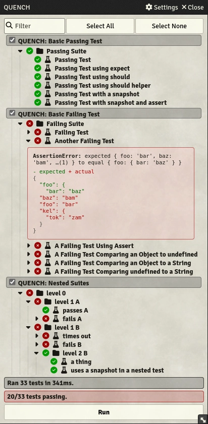

Quench
Quench


Harden your Foundry module or system code with end-to-end UI tests directly within Foundry. Powered by Mocha and also includes Chai and fast-check.
Quench adds a test runner UI as a native Foundry Application.
You can register test suites with quench and view them in the test runner, then run them and view the results.
Additional API documentation can be found here.

Usage
The primary public API is the Quench class.
A global instance of Quench is available as a global called quench, guaranteed to be initialized after the core "init" hook.
This class includes references to both the mocha and chai globals, as well as some methods to add new test batches and run the tests.
Quench uses "test batches" as another layer of organization above the built-in mocha suites and tests. Test batches are at the top layer of the hierarchy, can contain suites and/or tests, and can be enabled or disabled through the Quench UI. Enabling or disabling batches allows you to pick and choose only a subset of suites and tests to execute in one test run.
quenchReady Hook
Quench provides a "quenchReady" hook, which indicates when Quench is ready for you to start registering batches.
"quenchReady" is guaranteed to occur after the core "init" hook, as it is fired in Quench's "setup" hook.
"quenchReady" receives the current Quench instance as an argument.
quenchReports Hook
In addition to the results displayed in the app, Quench provides a "quenchReports" hook.
It is fired when a batch run is finished, and receives an object with the following properties as argument:
json: A string containing a JSON report as generated by Mocha.
Register a test batch
You can register a Quench test batch to be executed with Quench by calling quench.registerBatch.
registerBatch takes the following arguments:
key– a unique batch key that identifies this test batch. If multiple test batches are registered with the same key, the latest registration will overwrite previous registrations.registrationFunction– this function will be executed to register the suites and tests within this batch. It takes acontextargument, which contains the following functions necessary for defining a suite of tests:- Mocha –
describe,it,after,afterEach,before,beforeEach, andutils. - Chai –
assert,expect, andshould.shouldis also made available by it extendingObject.prototype. - fast-check –
fc.
- Mocha –
options-displayName– the name for this batch that will be shown in the UI and in the detailed test results. This is optional, Quench will fall back to the batch key if omitted.snapBaseDir– the directory from which snapshots for this batch will be read, and where snapshots will be stored. This is optional, Quench will fall back toData/__snapshots__/<package name>/, with each batch having its own directory there.preSelected– whether this batch will appear as checked when added to the UI. This is optional, Quench will fall back totrue.
Example:
Hooks.on("quenchReady", (quench) => {
quench.registerBatch(
"quench.examples.basic-pass",
(context) => {
const { describe, it, assert } = context;
describe("Passing Suite", function () {
it("Passing Test", function () {
assert.ok(true);
});
});
},
{ displayName: "QUENCH: Basic Passing Test" },
);
});
Additional examples can be found in this repository's nonsense-tests.ts file
Run test batches using the API
In addition to starting batch runs through the UI, Quench provides a method to run batches directly.
This method is available through quench.runBatches.
Additional information can be found in the API documentation.
// Run all batches
quench.runBatches("**");
// Run a single batch and upload the JSON report to Foundry's server at `Data/quench-report.json`
quench.runBatches(["quench.examples.basic-pass"], { json: true });
Snapshots
Snapshot handling is currently in alpha! The current API is not final and subject to change – all input is welcome!
Quench supports snapshot testing, allowing for Chai's comparisons to work with data previously serialised using pretty-format – this includes support for regular JS objects, as well as e.g. DOM elements.
To compare an object to a snapshot, you can use matchSnapshot() as assertion.
If a test run includes failed tests using snapshots, Quench will show a button in its UI that allows to update the snapshots of those tests.
Alternatively, setting quench.snapshots.enableUpdates = true will pass all snapshot tests and store the actual value as new expected value, updating all files belonging to tests where the actual value did not match the expected one.
By default, each batch using snapshots gets its own directory in which each snapshot is stored in a .snap.txt file whose name is generated by hashing the test's full title.
The base directory in which each batch's directory is created is Data/__snapshots__/<package name>.
When registering a batch, that batch's base directory can be overwritten by providing a snapBaseDir option; the path is resolved using Foundry's Data directory as root.
Example:
quench.registerBatch(
"quench.examples.snapshot-test",
(context) => {
const { describe, it, assert, expect } = context;
describe("Snapshot Tests", function () {
it("Uses assert to match against a snapshot", function () {
assert.matchSnapshot({ foo: "bar" });
});
it("Uses expect to match against a snapshot", function () {
expect({ foo: "baz" }).to.matchSnapshot();
});
});
},
{ displayName: "QUENCH: Snapshot Test", snapBaseDir: "__snapshots__/quench-with-a-twist" },
);
Typescript
Quench offers a package on npm containing its types, allowing Typescript to check for correct API usage and provide autocompletion. The package can be installed with
npm install --save-dev @ethaks/fvtt-quench
The types can then be used by adding them to the types section of your tsconfig.json:
{
"compilerOptions": {
"types": ["@ethaks/fvtt-quench"]
}
}
By default, the quench global is typed as Quench | undefined.
To access it, you have to use a type guard or explicitly type it as initialized and present by adding a quench property to the global LenientGlobalVariableTypes interface (see foundry-vtt-type's FAQ)
Conventions
By convention, batch keys should begin with the package short name, followed by a period and then a simple identifier for the batch. Batch display names should begin with the package name in caps, followed by a colon, and a short description of the tests included in the batch.
Key: <package>.batch.identifier
Display name: <PACKAGE>: A description of the batch's contents
License
Licensed under the GPLv3 License (see LICENSE).